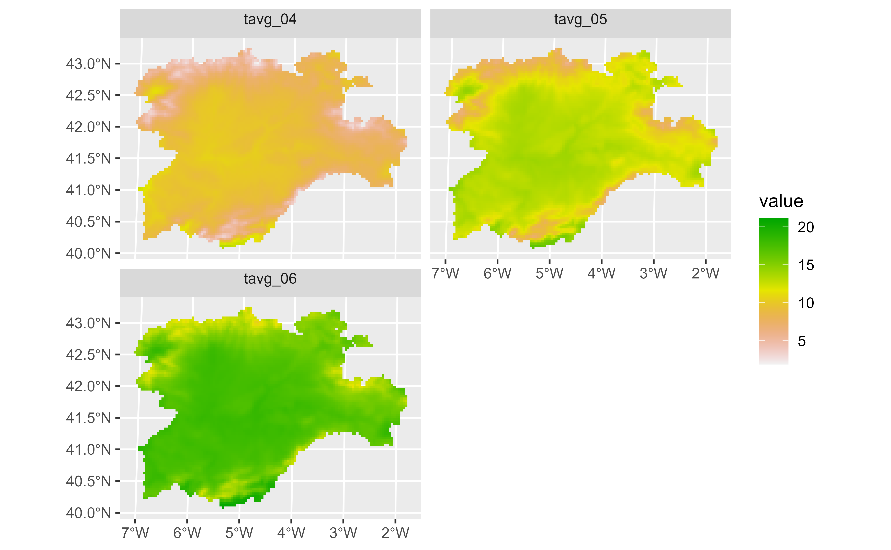
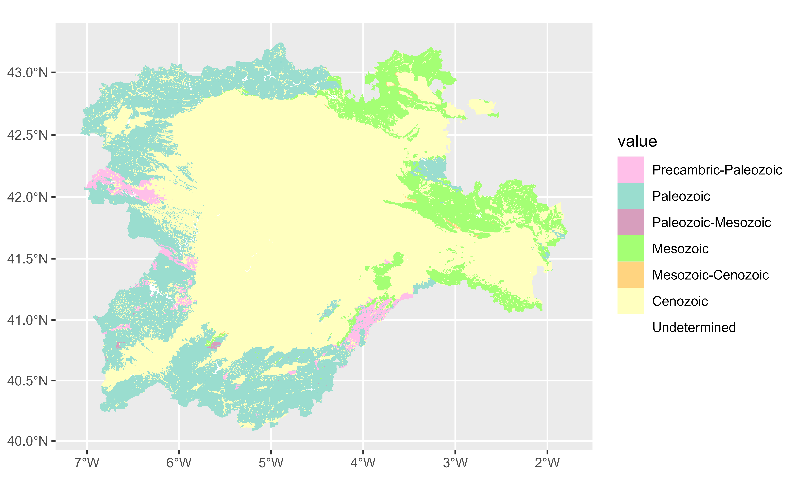
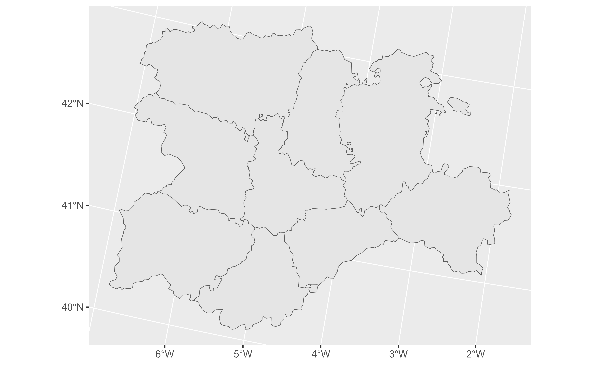
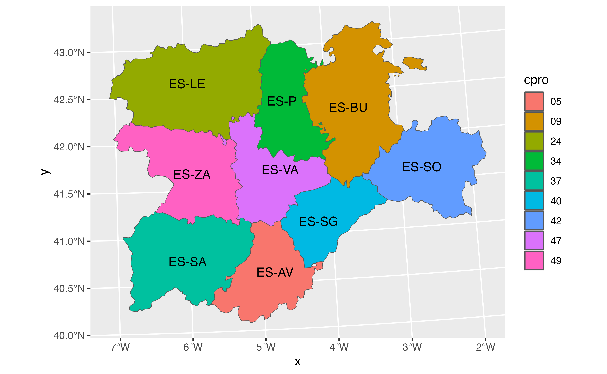
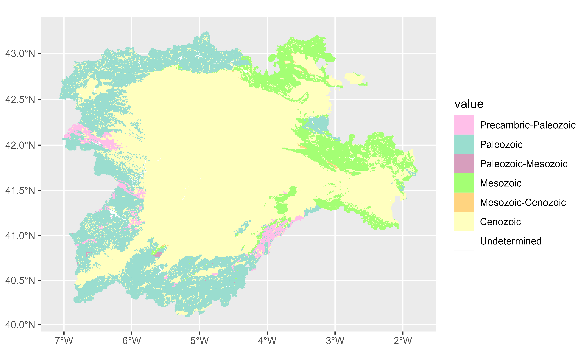
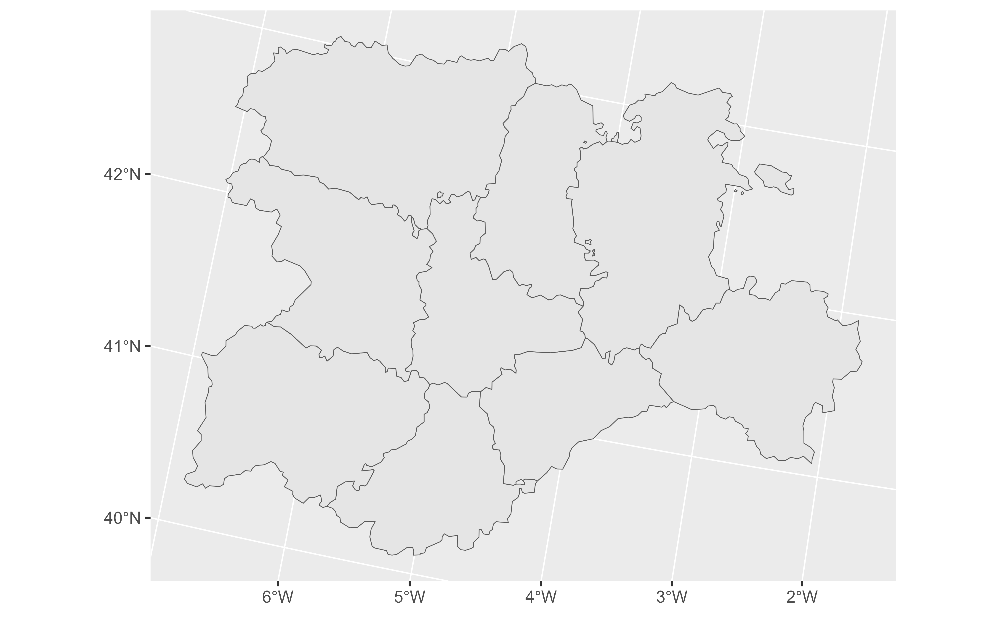
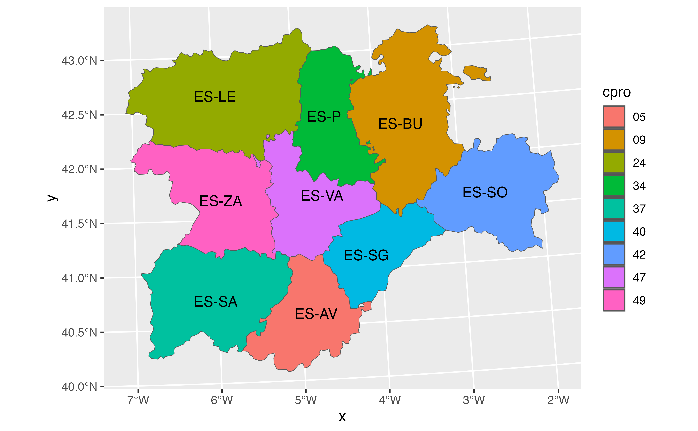

autoplot() uses ggplot2 to draw plots as the ones produced by
terra::plot()/terra::plotRGB() in a single command.
Usage
# S3 method for class 'SpatRaster'
autoplot(
object,
...,
rgb = NULL,
use_coltab = NULL,
facets = NULL,
nrow = NULL,
ncol = 2
)
# S3 method for class 'SpatVector'
autoplot(object, ...)
# S3 method for class 'SpatGraticule'
autoplot(object, ...)
# S3 method for class 'SpatExtent'
autoplot(object, ...)Arguments
- object
A
SpatRastercreated withterra::rast(), aSpatVectorcreated withterra::vect(), aSpatGraticule(seeterra::graticule()) or aSpatExtent(seeterra::ext()).- ...
other arguments passed to
geom_spatraster(),geom_spatraster_rgb()orgeom_spatvector().- rgb
Logical. Should be plotted as a RGB image? If
NULL(the default)autoplot.SpatRaster()would try to guess.- use_coltab
Logical. Should be plotted with the corresponding
terra::coltab()? IfNULL(the default)autoplot.SpatRaster()would try to guess. See alsoscale_fill_coltab().- facets
Logical. Should facets be displayed? If
NULL(the default)autoplot.SpatRaster()would try to guess.- nrow, ncol
Number of rows and columns on the facet.
Value
A ggplot2 layer
Details
Implementation of ggplot2::autoplot() method.
Methods
Implementation of the generic ggplot2::autoplot() method.
SpatRaster
Uses geom_spatraster() or geom_spatraster_rgb().
SpatVector, SpatGraticule and SpatExtent
Uses geom_spatvector(). Labels can be placed with geom_spatvector_text()
or geom_spatvector_label().
See also
Other ggplot2 utils:
fortify.Spat,
geom_spat_contour,
geom_spatraster(),
geom_spatraster_rgb(),
ggspatvector,
stat_spat_coordinates()
Other ggplot2 methods:
fortify.Spat
Examples
# \donttest{
file_path <- system.file("extdata/cyl_temp.tif", package = "tidyterra")
library(terra)
temp <- rast(file_path)
library(ggplot2)
autoplot(temp)

# With a tile
tile <- system.file("extdata/cyl_tile.tif", package = "tidyterra") |>
rast()
autoplot(tile)
 # With coltabs
ctab <- system.file("extdata/cyl_era.tif", package = "tidyterra") |>
rast()
autoplot(ctab)

# With vectors
v <- vect(system.file("extdata/cyl.gpkg", package = "tidyterra"))
autoplot(v)

v |> autoplot(aes(fill = cpro)) +
geom_spatvector_text(aes(label = iso2)) +
coord_sf(crs = 25829)

# }
# With coltabs
ctab <- system.file("extdata/cyl_era.tif", package = "tidyterra") |>
rast()
autoplot(ctab)

# With vectors
v <- vect(system.file("extdata/cyl.gpkg", package = "tidyterra"))
autoplot(v)

v |> autoplot(aes(fill = cpro)) +
geom_spatvector_text(aes(label = iso2)) +
coord_sf(crs = 25829)

# }